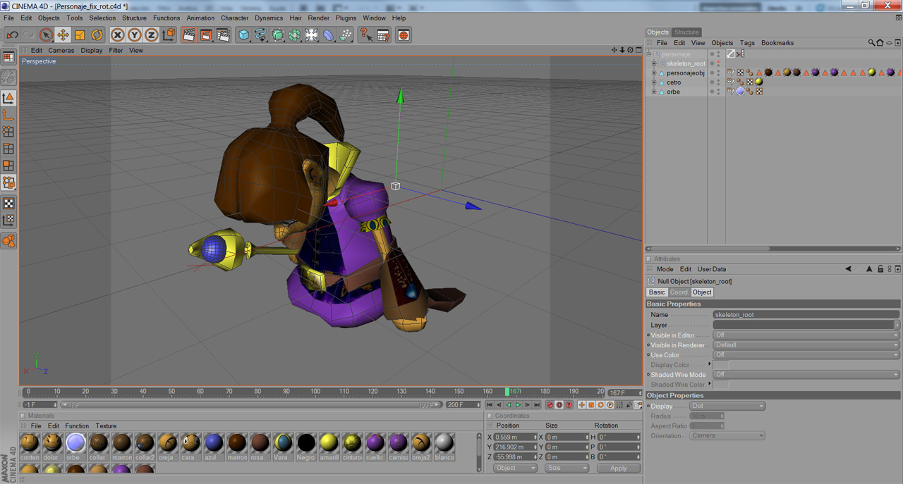
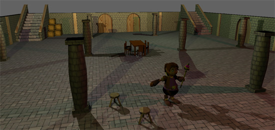
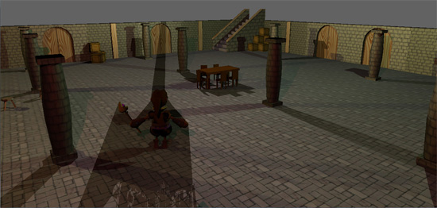
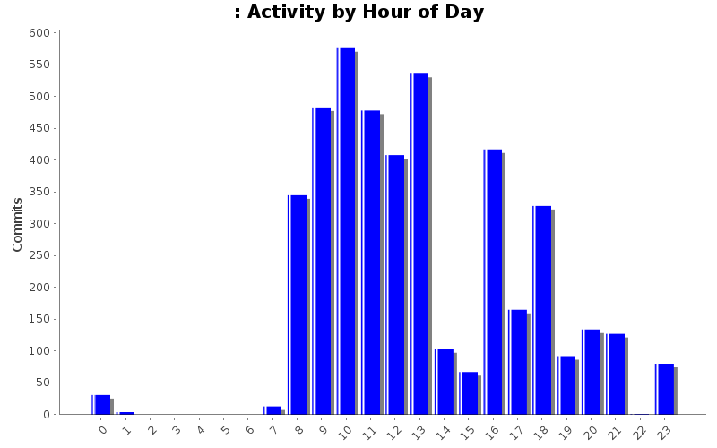
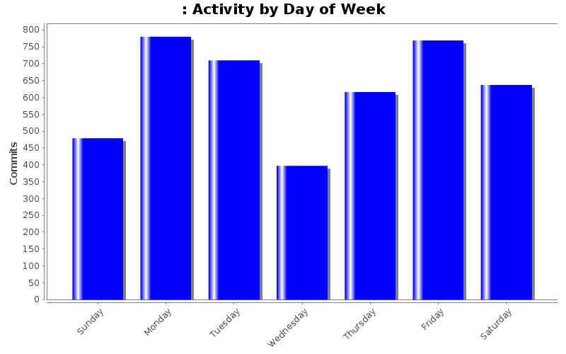

En el blog de desarrollo no todo iban a ser alegrías y objetivos cumplidos, también es justo y necesario tratar los escollos del camino. La guerra de formatos y los insufribles dolores de cabeza que provocan aquellos que son privativos no es algo que nos pille de primeras. ¿Cuántas veces un escalofrío nos ha recorrido el cuerpo cuando una institución pública nos envía un formulario importante en .docx? De la misma manera, este problema nos lo encontramos en el mundo de la animación en tres dimensiones.
Cinema 4D es privativo pero existen exportadores
Nuestro artista trabaja con Cinema 4D, un software propietario de modelado y animación. En ningún momento se me pasaría por la cabeza rechazar una colaboración por este motivo. No seré yo quien lo coloque entre la espada y la pared: “aprendes Blender o sales derechito por la puerta”. Por supuesto, no quiero criticar su trabajo, lo está haciendo genial, no hay más que mirar los resultados. El culpable es el formato cerrado y su incompatibilidad a priori con Ogre. Lógicamente, en su momento comprobé que existían exportadores desde Cinema 4D a Blender y Ogre. Además, en caso de que los plugins diesen problemas podíamos utilizar COLLADA, un formato XML abierto para el intercambio de información 3D entre distinto software de creación de contenido (DCC).

¡Horror! El asunto no es tan sencillo
Nuestra sorpresa y desazón fueron máximas cuando comprobamos que en la exportación a COLLADA se perdía información imperdonable como el UV mapping de las texturas y las animaciones. Lo mismo ocurría con la totalidad de formatos supuestamente preparados para el intercambio.
Finalmente me he puesto en contacto con el desarrollador del plugin que exporta de Cinema 4D a Ogre más prometedor. Tras intercambiar varios correos y toneladas de problemas hemos conseguido incluir el personaje creado por AJR en la escena. No obstante, aún estamos tratando de solucionar problemas con las sombras proyectadas y las animaciones. Hemos preguntado en el foro de Ogre y seguimos indagando la forma de solucionarlo.

Poco a poco se solucionan los problemas
Una vez encontremos los flujos de trabajo y de exportación adecuados no habrá demasiados problemas, pero hasta entonces uno pasa bastante miedo. Por estos inconvenientes y sintiéndolo mucho, nos será imposible incluir el personaje animado en la demo técnica antes de la fase local del CUSL. Cuando hayamos superado este problema distribuiremos los personajes texturizados y animados en un formato abierto.

Sin duda, no hay que fiarse en absoluto de estos formatos.
Disclaimer: es posible que mi inexperiencia con el modelado 3D en general y con los formatos en particular me ha llevado a imprecisiones a lo largo de este artículo. Ruego no arrojen piedras.
El colaborador Antonio Jiménez Rodríguez (AJR) continua trabajando con intensidad en el modelado, texturizado y animación de los personajes de Sion Tower. La prueba es este nuevo enemigo, el Diablillo.
Criatura del averno de estatura ligeramente superior al Goblin. Cuenta con la cola y los cuernos clásicos de los demonios. No lleva ropa y su rojo oscuro de piel le confiere un aspecto más despiadado. Ataca con sus afiladas garras y no necesita ningún tipo de arma adicional.
Los colaboradores están trabajando a un nivel impresionante, ¡hay que ponerse las pilas para estar a la altura! El siguiente paso es integrar el protagonista animado creado por AJR dentro de la demo técnica.
Gource es una herramienta para la visualización de la evolución de un proyecto a partir del log de su sistema de control de versiones. Gource es mucho más visual que StatSVN ya que utiliza OpenGL para renderizar de forma atractiva el árbol de ficheros del proyecto junto a sus atareados desarrolladores (como abejas en un panal). Es compatible con Git, Mercurial y SVN. Si quieren ver el nivel de actividad del proyecto y dejarme en ridículo, presionen al botón de reproducción.
Un poco de reflexión
En el vídeo se aprecia perfectamente las dos partes diferenciadas del proyecto: IberOgre (derecha) y Sion Tower (izquierda). Como mencioné en el informe de StatSVN, vemos que al comienzo el ritmo de trabajo era muy bajo. Comencé por el documento de diseño del juego y algunos artículos de la wiki (no reflejados por Gource). Más adelante la situación mejoró con los ejemplos para IberOgre y la explosión de trabajo en Sion Tower a partir de enero.
Me atrevo a decir que la evolución es favorable y trataré de que permanezca así durante los próximos meses.
Compilando e instalando Gource en Linux
La versión de Gource que se encuentra en los repositorios de Ubuntu es bastante arcaica por lo que la mejor opción es descargarlo, compilarlo e instalarlo.
Configuramos y comprobamos que todo esta correcto:
./configure
Compilamos:
make
Instalamos:
sudo make install
Creando un vídeo de Gource con ffmpeg
Gource se dedica a mostrar en una ventana la evolución del proyecto pero no guarda un vídeo del resultado. Para conseguirlo podemos hacer uso de ffmpeg, la solución libre para trabajar con audio y/o vídeo. Instalamos ffmpeg en sistemas basados en Debian con el clásico comando:
sudo apt-get install ffmpeg
En versiones anteriores a la 0.7, Gource estaba enfocado especialmente a Git y era necesario transformar los logs de SVN con un script para que el software lo aceptase. Actualmente ya no es necesario a menos que tengas la versión de los repositorios. Para iniciar la grabación nos situamos en el directorio raíz del proyecto y ejecutamos lo siguiente:
StatSVN es una herramienta que recopila información de un repositorio Subversion y genera un informe en HTML describiendo su desarrollo. Como veremos, es posible obtener una gran cantidad de datos relevantes que desvelan los hábitos de los miembros de un equipo y en qué medida ha contribuido cada uno. ¿Quieres conocer cómo se ha trabajado en el proyecto estos meses?
En el informe sólo se refleja mi actividad ya que los artistas que están colaborando con el proyecto no están dados de alta en la forja. Nota para mí mismo: “añadir los colaboradores a la forja”.
Utilizando StatSVN
StatSVN es muy sencillo de utilizar, nos basta con tener la máquina virtual de Java instalada y seguir estos pasos:
Descargar la última versión del software aquí. * Obtener la última revisión del proyecto que queramos con svn checkout. * Desde el directorio raíz del repositorio obtenemos el log completo:
svn log -v –xml > logfile.log
Desde el directorio en el que queramos guardar el informe:
La gráfica anterior muestra el número de líneas de código correspondientes a los ejemplos de IberOgre y al juego Sion Tower en el eje y mientras que en el x aparece el tiempo. Puede observarse un crecimiento bastante lento hasta el 2 de noviembre ya que este periodo lo dediqué sobre todo a planificación y aprendizaje. También trabajé en los primeros artículos de la wiki, que no aparecen reflejados en el repositorio.
A medida que comenzaba el desarrollo de Sion Tower el número de líneas ha crecido considerablemente. Los saltos corresponden a pequeñas iteraciones: análisis y diseño de un sistema, implementación, pruebas e integración.
Los resultados parecen bastante positivos, espero seguir manteniendo el ritmo durante los próximos meses.
Horas del día y días de la semana

Esta gráfica muestra las horas del día en el eje x mientras que en el y aparece el número de commits. He procurado adquirir el hábito de trabajar en el proyecto por las mañanas, lo que ha provocado un aumento de actividad entorno a las 10:00. No es raro que trabaje por la tarde y puedo decir que el proyecto aún no me ha quitado el sueño.

Por su parte, esta gráfica muestra la actividad medida en número de commits (eje y) con respecto a los días de la semana (eje x). Entre semana el nivel de actividad es uniforme, aunque parece ser que llego al viernes bastante cansado. Me ha sorprendido el tremendo pico de actividad situado en los sábados. Seguramente se deba a que he pasado varios meses del desarrollo trabajando como becario en la Universidad y no tenía demasiado tiempo.
Informe completo
Eso es todo amigos (por el momento). Los interesados pueden husmear el informe completo generado por StatSVN para IberOgre y Sion Tower en el mencionado periodo de tiempo. Dentro de unos meses volveré a generarlo para seguir viendo la evolución del proyecto.
Con motivo de la Quincena de la Ingeniería en la Escuela Superior de Ingeniería de Cádiz en la ADVUCA estamos organizando talleres y conferencias relacionados con el desarrollo de videojuegos. Los alumnos de la Universidad y de cualquier procedencia pueden disfrutar de una conferencia sobre Blender y un taller práctico de Gosu, todos los detalles a continuación.
Diseño 3D con Blender
21 de marzo de 2011 de 17:00 a 19:00
Blender es una herramienta libre de modelado y animación en tres dimensiones. Se ha utilizado en decenas de videojuegos y cortos de animación como Big Buck Bunny o Sintel. Además, integra un completo motor llamado Blender Game Engine el cual emplea Python como lenguaje de scripting.
La conferencia la ofrecerá Carlos Morcillo, profesor en la Universidad de Castilla La-Mancha y miembro de la Blender Foundation. Es todo un experto en la herramienta y ha publicado libros como “Aprende Blender en 24 horas” el cual me vino estupendamente para Sion Tower.
Desarrollo de videojuegos en C++ con Gosu
24 de marzo de 2011 de 18:00 a 21:00
Gosu es una biblioteca libre para el desarrollo de videojuegos en 2D utilizando C++ o Ruby. Emplea OpenGL internamente por lo que cuenta con aceleración por hardware. Además es compatible con Windows, GNU/Linux, iOS y Mac. Al ser orientada a objetos, su curva de aprendizaje es considerablemente más suave que la de la clásica SDL. Definitivamente es lo mejorcito que existe ahora mismo en 2D (open source).
El taller corre a cargo del compañero José Tomás Tocino el cual ha desarrollado varios juegos con esta biblioteca (oFlute y Freegemas). Por si fuera poco, ha publicado una serie de tres artículos al respecto en la edición española de Linux Magazine.
Ponentes de lujo en la ADVUCA
En la ADVUCA no podemos estar más contentos e ilusionados con estos talleres y sus ponentes. En cualquier otro sitio suelen cobrar las matrículas a un precio elevado mientras que nosotros los ofrecemos completamente gratis. No cabe duda de que la temática es de lo más interesante y todos aprenderemos mucho la semana que viene.

{kind=link}